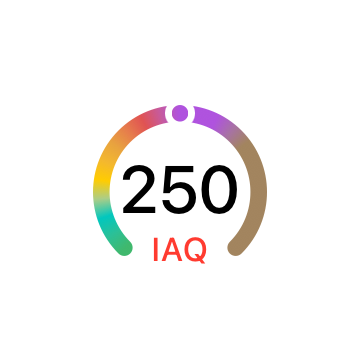
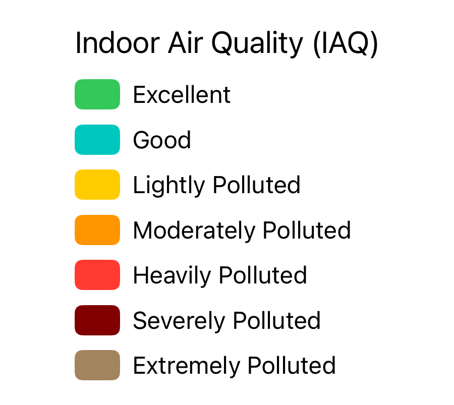
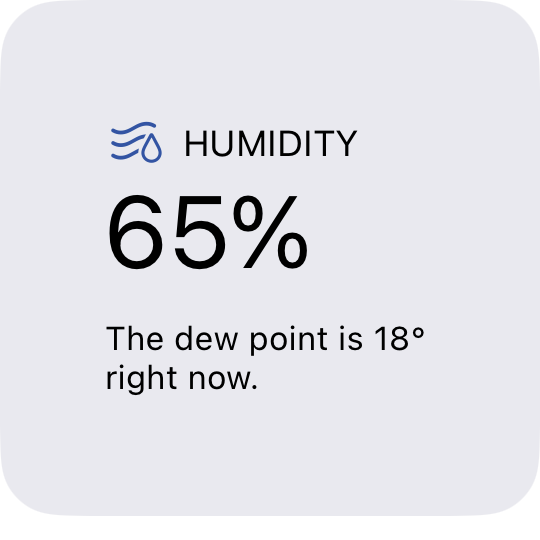
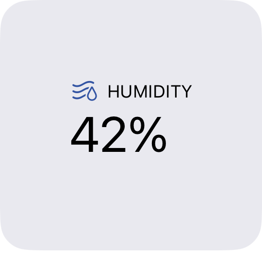
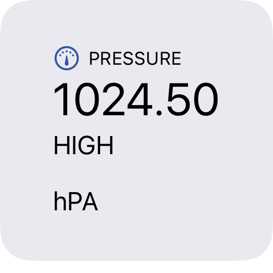
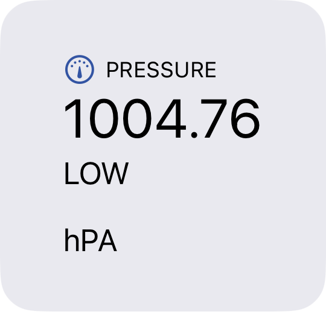

Meshtastic nodes can report sensor data across the mesh, giving you visibility into the physical environment at remote locations.
| Type | Data |
|---|---|
| Device Metrics | Battery level, battery voltage, channel utilisation, airtime fraction |
| Environment | Temperature (°C/°F), relative humidity (%), barometric pressure (hPa) |
| Air Quality | PM1.0, PM2.5, PM10 particulate counts (µg/m³) |
| Power | Voltage and current readings from power monitoring sensors |
| Icon | State | Description |
|---|---|---|
| Full | Battery is well charged (≥80%). | |
| Low | Battery is low (≤20%) — charge the node soon. | |
| Charging | Node is plugged in and fully charged. | |
| Unknown | Battery level not reported by this node. |
| Icon | Display | Description |
|---|---|---|
| Dot | Coloured dot — red/orange/yellow/green by AQI category. | |
| Pill | Compact pill label showing AQI category name. | |
| Gauge | Circular gauge showing AQI value and category. | |
| Text | Numeric AQI value with category label. | |
 |
IAQ Gauge | Indoor Air Quality circular gauge (BME680). |
| IAQ Pill | Indoor Air Quality compact pill label. | |
 |
IAQ Scale | Indoor Air Quality rating scale with category bands. |
| Icon | Reading | Description |
|---|---|---|
 |
Humidity (with dew point) | Relative humidity percentage and calculated dew point temperature. |
 |
Humidity | Relative humidity percentage only. |
 |
High pressure | Barometric pressure above normal (≥1013 hPa). |
 |
Low pressure | Barometric pressure below normal (<1013 hPa). |
Telemetry is visible in two places:
Go to Settings → Telemetry to enable telemetry modules and set reporting intervals:
| Setting | Description |
|---|---|
| Device Metrics Interval | How often (seconds) the node broadcasts battery and utilisation data. |
| Environment Interval | How often environment sensor data is broadcast. |
| Air Quality Interval | How often air quality sensor data is broadcast. |
| Environment Screen | Show environment data on the device screen. |
| Telemetry on Admin Channel | Restrict telemetry to the admin channel instead of broadcast. |
The app displays data from any sensor supported by Meshtastic firmware. Common sensors:
Sensor availability depends on your hardware. Check the Meshtastic hardware guide for compatibility.
The Detection Sensor module alerts the mesh when a connected PIR motion sensor or contact switch is triggered. Configure it in Settings → Detection Sensor. Alerts appear as messages on the primary channel and as node log entries.